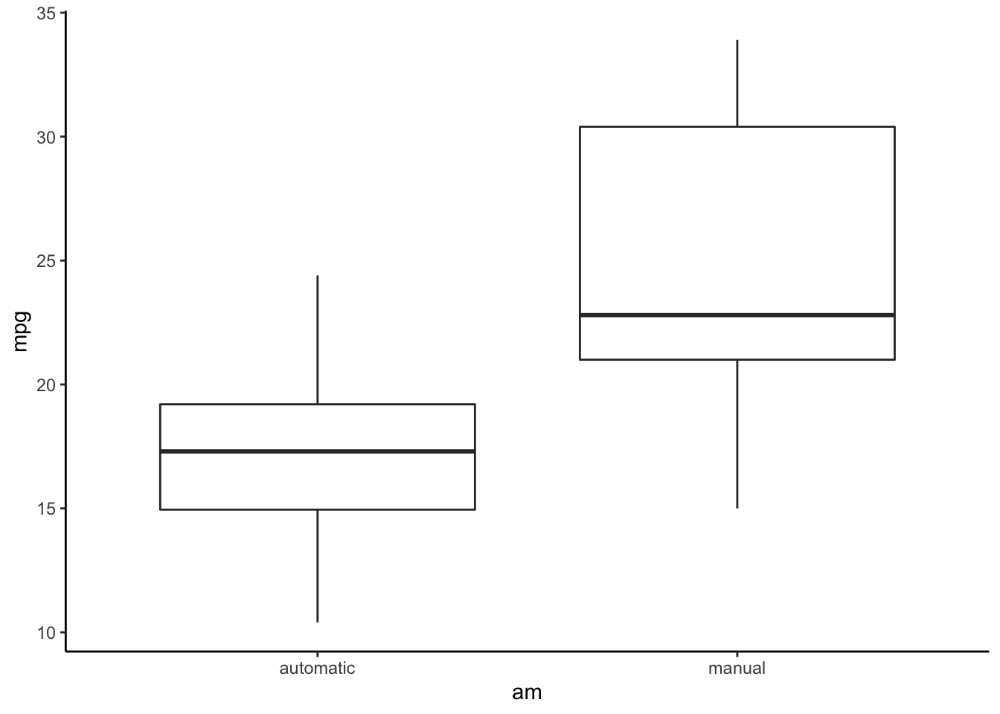
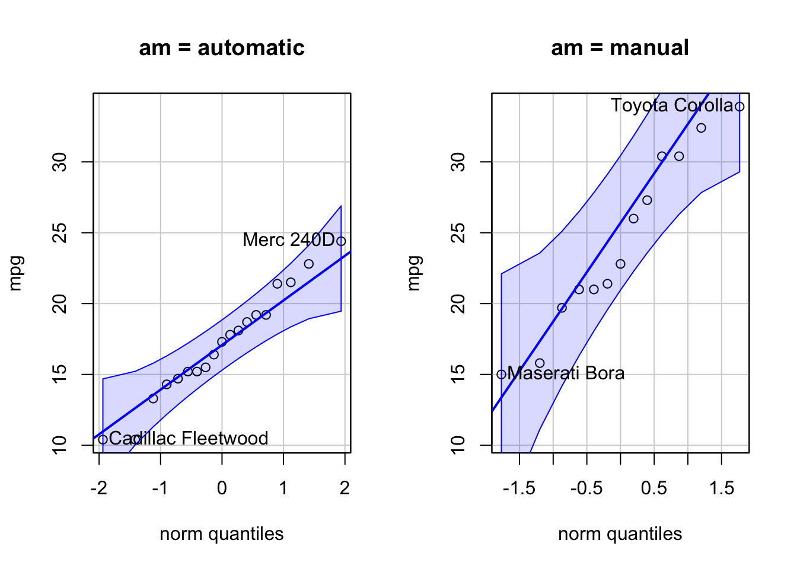

An independent t-test is used to compare means of two groups that are independent from one another (think a between-subject design). For example, one group is an experimental condition, and the other is a control condition. One group is people who endorse a particular political view, the other group is people who disagree with the view. An observation (a sample) can only belong to one group; it cannot belong to both groups at the same time.
Generally, datasets for independent t-tests will have at least two variables: a dependent variable and a grouping (independent) variable.
Let’s consider the dataset mtcars in R. We are going to compare whether a car’s tranmission (am; 0 = automatic, 1 = manual) affects fuel economy mpg.
data("mtcars") #load dataset from R
df <- mtcars[, c("mpg", "am")] #extract only two columns
df## mpg am
## Mazda RX4 21.0 1
## Mazda RX4 Wag 21.0 1
## Datsun 710 22.8 1
## Hornet 4 Drive 21.4 0
## Hornet Sportabout 18.7 0
## Valiant 18.1 0
## Duster 360 14.3 0
## Merc 240D 24.4 0
## Merc 230 22.8 0
## Merc 280 19.2 0
## Merc 280C 17.8 0
## Merc 450SE 16.4 0
## Merc 450SL 17.3 0
## Merc 450SLC 15.2 0
## Cadillac Fleetwood 10.4 0
## Lincoln Continental 10.4 0
## Chrysler Imperial 14.7 0
## Fiat 128 32.4 1
## Honda Civic 30.4 1
## Toyota Corolla 33.9 1
## Toyota Corona 21.5 0
## Dodge Challenger 15.5 0
## AMC Javelin 15.2 0
## Camaro Z28 13.3 0
## Pontiac Firebird 19.2 0
## Fiat X1-9 27.3 1
## Porsche 914-2 26.0 1
## Lotus Europa 30.4 1
## Ford Pantera L 15.8 1
## Ferrari Dino 19.7 1
## Maserati Bora 15.0 1
## Volvo 142E 21.4 1df$am <- factor(df$am, labels = c("automatic", "manual")) # convert the grouping variable to factor.
df## mpg am
## Mazda RX4 21.0 manual
## Mazda RX4 Wag 21.0 manual
## Datsun 710 22.8 manual
## Hornet 4 Drive 21.4 automatic
## Hornet Sportabout 18.7 automatic
## Valiant 18.1 automatic
## Duster 360 14.3 automatic
## Merc 240D 24.4 automatic
## Merc 230 22.8 automatic
## Merc 280 19.2 automatic
## Merc 280C 17.8 automatic
## Merc 450SE 16.4 automatic
## Merc 450SL 17.3 automatic
## Merc 450SLC 15.2 automatic
## Cadillac Fleetwood 10.4 automatic
## Lincoln Continental 10.4 automatic
## Chrysler Imperial 14.7 automatic
## Fiat 128 32.4 manual
## Honda Civic 30.4 manual
## Toyota Corolla 33.9 manual
## Toyota Corona 21.5 automatic
## Dodge Challenger 15.5 automatic
## AMC Javelin 15.2 automatic
## Camaro Z28 13.3 automatic
## Pontiac Firebird 19.2 automatic
## Fiat X1-9 27.3 manual
## Porsche 914-2 26.0 manual
## Lotus Europa 30.4 manual
## Ford Pantera L 15.8 manual
## Ferrari Dino 19.7 manual
## Maserati Bora 15.0 manual
## Volvo 142E 21.4 manualThe null hypothesis was that the means of group 1 and group 2 were not different, \(H_0: \mu_1 - \mu_2 = 0\)
Because the samples in each group were not the same observation, we have to look at the difference at the group level. That is, to look at the difference between \(\bar{X}_1\) and \(\bar{X}_2\).
Then, we test whether the mean difference were more or less than zero. \((\bar{X}_1 - \bar{X}_2)-0\)
If we take that mean difference and divide it by its standard error, we get a t value. \[ t = \frac{(\bar{X}_1 - \bar{X}_2)-0}{SE_{\bar{X}_1 - \bar{X}_2}} \] In a classical Student’s t-test, to estimate a standard error of a mean difference (\(SE_{\bar{X}_1 - \bar{X}_2}\)), we need to make an assumption of homogeneity of variance. We assume that variances in Group 1 and Group 2 are NOT different. The idea behind this assumption was that if variances of both groups are the same, we can combine (pooled) that information together and have a better estimate of standard error.
A t-test with pooled SD (\(s_p\)) looks like this.
\[ t = \frac{\bar{X}_1 - \bar{X}_2}{s_p \sqrt{\frac{1}{n_1} + \frac{1}{n_2}}} \] The term, \(s_p \sqrt{\frac{1}{n_1} + \frac{1}{n_2}}\), is an estimated standard error (\(SE_{\bar{X}_1 - \bar{X}_2}\)).
We can find the pooled SD with this equation. \[s_p = \sqrt{\frac{(n_1 -1)s_1^2 + (n_2 -1)s_2^2 }{n_1 + n_2 - 2}}\] Conceptually, we combine the variances from both groups, then take a square root of the variance to get a pooled standard deviation (\(s_p\)). The degrees of freedom for this test is \((n_1 - 1) + (n_2 -2) = n_1 + n_2 -2 = N -2\)
First, let’s look at descriptive stats for each group. We will use describeBy(y ~ x, data) from the psych package. The function will create descriptive stats of dependent variable y by the group variable x.
library(psych)
describeBy(mpg ~ am, data = df)##
## Descriptive statistics by group
## am: automatic
## vars n mean sd median trimmed mad min max range skew kurtosis se
## X1 1 19 17.15 3.83 17.3 17.12 3.11 10.4 24.4 14 0.01 -0.8 0.88
## --------------------------------------------------------------------------------------------
## am: manual
## vars n mean sd median trimmed mad min max range skew kurtosis se
## X1 1 13 24.39 6.17 22.8 24.38 6.67 15 33.9 18.9 0.05 -1.46 1.71We can see that the means of the two groups were not quite the same, but we need a statistical test to determine that.
#Mean difference
mean_group <- aggregate(mpg ~ am, data = df, mean) # use aggregate() to apply mean() to `mpg` at each level of `am`
mean_group # this is a dataframe with means values.## am mpg
## 1 automatic 17.14737
## 2 manual 24.39231mean_diff <- mean_group$mpg[2] - mean_group$mpg[1] #manual - automatic
mean_diff## [1] 7.244939The mean difference is positive, suggesting that Group 2 is higher than Group 1.
# Variances
var_group <- aggregate(mpg ~ am, data = df, var) # calculate variances, var(), for each group.
var_group## am mpg
## 1 automatic 14.69930
## 2 manual 38.02577var1 <- var_group$mpg[1]
var2 <- var_group$mpg[2]Note that the variances were quite different. We will come back to this issue later.
# Calculate n
n1 <- nrow(df[df$am == "automatic",])
n2 <- nrow(df[df$am == "manual",])
N <- nrow(df)
# pooled standard deviation
s_p <- sqrt((((n1-1)*var1) + ((n2-1)*var2))/(n1 + n2 -2))
s_p## [1] 4.902029# standard error of the mean difference
se <- s_p*(sqrt(1/n1 + 1/n2))
se## [1] 1.764422# t-test
t = mean_diff/se
t## [1] 4.106127t.test()To conduct a Student’s t-test in R, we use t.test(y ~ x, var.equal = TRUE). The model y ~ x denotes a model with y, the dependent variable, and x, the independent (group) variable. The option var.equal = TRUE tells R to use a Student’s t-test.
t.test(mpg ~ am, data = df, var.equal = TRUE)##
## Two Sample t-test
##
## data: mpg by am
## t = -4.1061, df = 30, p-value = 0.000285
## alternative hypothesis: true difference in means is not equal to 0
## 95 percent confidence interval:
## -10.84837 -3.64151
## sample estimates:
## mean in group automatic mean in group manual
## 17.14737 24.39231Note that the t value was the same as our manual calculation, but with a negative sign. This is because t.test() use automatic - manual, but our calculation above use manual - automatic. Nonetheless, they meant the same.
The 95% CI was for the mean difference. Because the 95% CI did not include zero, we were confident to say that the mean differences was not zero, suggesting that the two groups were not the same.
We use cohens_d() from the package effectsize.
library(effectsize)
effectsize::cohens_d(mpg ~ am, data = df, pooled_sd = TRUE)## Cohen's d | 95% CI
## --------------------------
## -1.48 | [-2.27, -0.67]
##
## - Estimated using pooled SD.When the assumption of homegeneity is uncertain or violated. We should use another version of t-test that has been modified for this situation: The Welch t-test. In Welch’s formula, the standard error was calculate from each group variance instead of \(s_p\). \[ t = \frac{\bar{X}_1 - \bar{X}_2}{\sqrt{\frac{s_1^2}{n_1} + \frac{s_2^2}{n_2}}} \] The degrees of freedom were then adjusted with the following formula. \[ \text{Welch's }df =\frac{\bigg(\cfrac{s_1^2}{n_1} + \cfrac{s_2^2}{n_2}\bigg)^2} {\cfrac{\bigg(\frac{s_1^2}{n_1} \bigg)^2}{(n_1-1)} + \cfrac{\bigg(\frac{s_2^2}{n_2} \bigg)^2}{(n_2-1)} } \] Actually the default for t.test() is a Welch’s t-test.
t.test(mpg ~ am, data = df)##
## Welch Two Sample t-test
##
## data: mpg by am
## t = -3.7671, df = 18.332, p-value = 0.001374
## alternative hypothesis: true difference in means is not equal to 0
## 95 percent confidence interval:
## -11.280194 -3.209684
## sample estimates:
## mean in group automatic mean in group manual
## 17.14737 24.39231In this example, the Welch’s t value was smaller than the Student’s t. Note that the Welch’s df was much lower than N - 2. This was because of the big difference in variances between the two groups.
var_group## am mpg
## 1 automatic 14.69930
## 2 manual 38.02577If we look at the distribution, we will see that the mpg in manual transmision had more variation than those in automatic transmission.
library(ggplot2)
ggplot(data = df, aes(x = am, y = mpg)) +
geom_boxplot() +
theme_classic() ## Effect size (un-pooled SD)
library(effectsize)
effectsize::cohens_d(mpg ~ am, data = df, pooled_sd = FALSE)## Cohen's d | 95% CI
## --------------------------
## -1.41 | [-2.26, -0.53]
##
## - Estimated using un-pooled SD.Should you use Welch’s or Student’s t? Traditionally, you would, first, determine whether the homogeneity of variance assumption was violated. If it was not, choose Student’s t. But if it was violated (i.e., unequal variances) like this case, choose Welch’s.
However, when the homogeneity of variance assumption is true, Welch’s and Student’s t produce very similar results. But in the case of violation, Welch’s procedure helps protect against Type I error. Therefore, it is recommended that you should use Welch’s for all cases.
When conducting independent t-test, these assumptions should be checked.
The assumption of independence must be ensure by the research design. In this case, we know that the group membership of each observation was mutually exclusive.
The assumption of normality could be check by Q-Q plots and Shapiro-Wilk statistic. For Q-Q plots, the package car provides an easy to use function for checking Q-Q plot.
#install.packages("car")
library("car")
qqPlot(mpg ~ am, data = df) #we use a model, mpg ~ am, here to create a QQ plot for each level of `am`. For Shapiro-Wilk test, we will apply the shaprio.test() function by each group level of am.
by(df$mpg, df$am, shapiro.test)## df$am: automatic
##
## Shapiro-Wilk normality test
##
## data: dd[x, ]
## W = 0.97677, p-value = 0.8987
##
## --------------------------------------------------------------------------------------------
## df$am: manual
##
## Shapiro-Wilk normality test
##
## data: dd[x, ]
## W = 0.9458, p-value = 0.5363The tests for both groups were not significant (p > .05), suggesting that mpg in each group were normally distributed.
The assumption of homogeneity of variance could be check with Levene’s test. The car’s leveneTest(y ~ x, data, center = mean) provide a function to test this assumption.
leveneTest(mpg ~ am, data = df, center = mean) #An option `center = mean` uses original Levene's formula.## Levene's Test for Homogeneity of Variance (center = mean)
## Df F value Pr(>F)
## group 1 5.921 0.02113 *
## 30
## ---
## Signif. codes: 0 '***' 0.001 '**' 0.01 '*' 0.05 '.' 0.1 ' ' 1As expected, the test shows that the variances between the two groups were significantly different (\(\sigma^2_1 ≠ \sigma^2_2\)), which violated the homogeneity of variance assumption. The Welch’s procedure is preferred in this case.
jmvThe jamovi’s R jmv package provides another way to do t-tests in R with ttestIS()
library(jmv)
ttestIS(formula = mpg ~ am, data = df,
students = TRUE, #Student's t-test
welchs = TRUE, #Welch's t-test
eqv = TRUE, #Levene's test
meanDiff = TRUE, #mean difference and SE
desc = TRUE #descriptive stats
)##
## INDEPENDENT SAMPLES T-TEST
##
## Independent Samples T-Test
## ────────────────────────────────────────────────────────────────────────────────────────────────
## Statistic df p Mean difference SE difference
## ────────────────────────────────────────────────────────────────────────────────────────────────
## mpg Student's t -4.106127 30.00000 0.0002850 -7.244939 1.764422
## Welch's t -3.767123 18.33225 0.0013736 -7.244939 1.923202
## ────────────────────────────────────────────────────────────────────────────────────────────────
##
##
## ASSUMPTIONS
##
## Homogeneity of Variances Test (Levene's)
## ─────────────────────────────────────────────
## F df df2 p
## ─────────────────────────────────────────────
## mpg 5.920954 1 30 0.0211334
## ─────────────────────────────────────────────
## Note. A low p-value suggests a
## violation of the assumption of equal
## variances
##
##
## Group Descriptives
## ───────────────────────────────────────────────────────────────────────────
## Group N Mean Median SD SE
## ───────────────────────────────────────────────────────────────────────────
## mpg automatic 19 17.14737 17.30000 3.833966 0.8795722
## manual 13 24.39231 22.80000 6.166504 1.710280
## ───────────────────────────────────────────────────────────────────────────